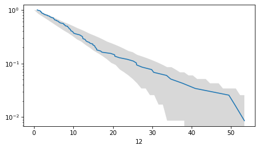
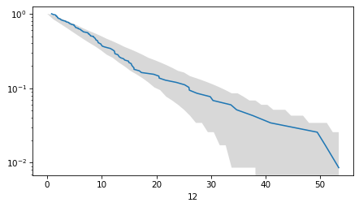
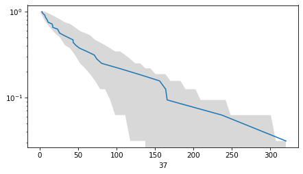
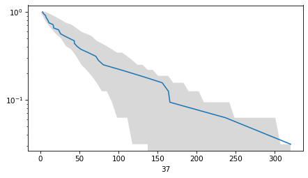

Title#
Here’s a question from the Reddit statistics forum.
A while ago I watched a YouTube video where the creator told the story that he went to a science conference and he was bored so he started measuring the number of times and the intervals between when the speakers said “ehhh” or “emmm”. He discovered the mean was equal to the variance, and spent the latter part of the video explaining why he thought this was a Poisson process and what can be learnt from it.
I can’t find it anywhere, I don’t remember the title or the name of the channel. Does anyone know?
Update the link…
Click here to run this notebook on Colab.
I’ll download a utilities module with some of my frequently-used functions, and then import the usual libraries.
Show code cell content
from os.path import basename, exists
def download(url):
filename = basename(url)
if not exists(filename):
from urllib.request import urlretrieve
local, _ = urlretrieve(url, filename)
print("Downloaded " + str(local))
return filename
download('https://github.com/AllenDowney/DataQnA/raw/main/nb/utils.py')
import numpy as np
import matplotlib.pyplot as plt
import pandas as pd
import seaborn as sns
from utils import decorate
Show code cell content
# install the empiricaldist library, if necessary
try:
import empiricaldist
except ImportError:
!pip install empiricaldist
Answer#
download('https://raw.githubusercontent.com/notDavidsGit/uhmmmsData/main/uhmms_publicVersion.csv')
Downloaded uhmms_publicVersion.csv
'uhmms_publicVersion.csv'
df = pd.read_csv('uhmms_publicVersion.csv')
professional = df.loc[0]
df = df.drop(index=0).replace(0, np.nan)
df
| 1 | 2 | 3 | 4a | 5 | 6 | 7 | 8 | 9 | 10 | ... | 30 | 31 | 32 | 33 | 34 | 35a | 35b | 36 | 37 | 38 | |
|---|---|---|---|---|---|---|---|---|---|---|---|---|---|---|---|---|---|---|---|---|---|
| 1 | 156.189129 | 18.287924 | 5.716667 | 8.566563 | 11.007572 | 10.880978 | 9.684331 | 2.427521 | 4.158846 | 3.273735 | ... | 2.625 | 7.6650 | 9.1305 | 109.000005 | 77.900004 | 3.850001 | 12.874485 | 15.687501 | 24.354284 | 7.507038 |
| 2 | 2.416570 | 4.756356 | 2.636593 | 28.591272 | 5.203077 | 1.333333 | 0.935780 | 1.026989 | 3.207831 | 11.775922 | ... | 9.225 | 26.3608 | 47.3818 | 8.450001 | 18.200001 | 15.300002 | 11.874525 | 2.520834 | 102.931744 | 18.381962 |
| 3 | 15.799369 | 2.534259 | 6.110195 | 21.399258 | 15.192085 | 23.163785 | 0.650880 | 7.854320 | 17.613728 | 0.801862 | ... | 1.050 | 11.3028 | 14.3960 | 110.450006 | 9.075000 | 8.524857 | 19.199233 | 1.979166 | 74.065260 | 12.151900 |
| 4 | 225.597393 | 1.573624 | 12.175269 | 6.800000 | 1.553463 | 16.436520 | 0.684817 | 1.203545 | 2.706110 | 1.670329 | ... | 5.250 | 48.3742 | 94.5109 | 1.475000 | 105.173298 | 2.649894 | 6.499740 | 7.541667 | 3.228572 | 15.213512 |
| 5 | 10.966667 | 33.813675 | 4.216213 | 2.550000 | 31.027056 | 0.851981 | 19.476464 | 6.464309 | 42.143022 | 3.524489 | ... | 2.450 | 6.1283 | 17.6890 | 41.000003 | 47.048119 | 5.974761 | 4.699812 | 8.876984 | 10.047942 | 339.787670 |
| ... | ... | ... | ... | ... | ... | ... | ... | ... | ... | ... | ... | ... | ... | ... | ... | ... | ... | ... | ... | ... | ... |
| 294 | NaN | NaN | NaN | NaN | NaN | NaN | NaN | 2.179838 | NaN | NaN | ... | NaN | NaN | NaN | NaN | NaN | NaN | NaN | NaN | NaN | NaN |
| 295 | NaN | NaN | NaN | NaN | NaN | NaN | NaN | 10.648887 | NaN | NaN | ... | NaN | NaN | NaN | NaN | NaN | NaN | NaN | NaN | NaN | NaN |
| 296 | NaN | NaN | NaN | NaN | NaN | NaN | NaN | 8.368250 | NaN | NaN | ... | NaN | NaN | NaN | NaN | NaN | NaN | NaN | NaN | NaN | NaN |
| 297 | NaN | NaN | NaN | NaN | NaN | NaN | NaN | 20.796852 | NaN | NaN | ... | NaN | NaN | NaN | NaN | NaN | NaN | NaN | NaN | NaN | NaN |
| 298 | NaN | NaN | NaN | NaN | NaN | NaN | NaN | 14.030208 | NaN | NaN | ... | NaN | NaN | NaN | NaN | NaN | NaN | NaN | NaN | NaN | NaN |
298 rows × 40 columns
summary = df.describe()
summary
| 1 | 2 | 3 | 4a | 5 | 6 | 7 | 8 | 9 | 10 | ... | 30 | 31 | 32 | 33 | 34 | 35a | 35b | 36 | 37 | 38 | |
|---|---|---|---|---|---|---|---|---|---|---|---|---|---|---|---|---|---|---|---|---|---|
| count | 56.000000 | 73.000000 | 74.000000 | 35.000000 | 160.000000 | 117.000000 | 27.000000 | 298.000000 | 56.000000 | 202.000000 | ... | 154.000000 | 92.000000 | 65.000000 | 11.000000 | 68.000000 | 117.000000 | 111.000000 | 53.000000 | 32.000000 | 21.000000 |
| mean | 54.381078 | 88.080670 | 18.643189 | 46.086570 | 13.167455 | 15.622566 | 50.658060 | 10.285966 | 80.489897 | 6.740673 | ... | 15.943382 | 21.456296 | 31.209854 | 75.043487 | 47.415831 | 16.982779 | 20.617316 | 19.366259 | 62.384678 | 177.234046 |
| std | 68.213970 | 129.539939 | 16.101857 | 57.920293 | 10.722984 | 16.568828 | 101.853630 | 9.864809 | 124.836447 | 5.922070 | ... | 17.120249 | 23.938341 | 39.714742 | 85.659932 | 44.066733 | 14.835323 | 21.187480 | 21.695768 | 74.938951 | 269.034938 |
| min | 0.966628 | 0.436783 | 0.666667 | 2.383333 | 0.668400 | 0.851981 | 0.650880 | 0.726123 | 1.177242 | 0.484528 | ... | 0.250000 | 1.539800 | 3.104900 | 1.475000 | 0.825000 | 2.074917 | 0.149994 | 1.979166 | 2.769348 | 1.431176 |
| 25% | 10.528745 | 5.979781 | 6.613955 | 11.107318 | 5.424506 | 5.002729 | 1.069221 | 3.639449 | 3.320004 | 2.898027 | ... | 4.881050 | 6.548550 | 9.130500 | 25.948964 | 16.624335 | 6.499740 | 8.249670 | 7.562197 | 10.644649 | 15.213512 |
| 50% | 26.590604 | 31.897432 | 14.090931 | 25.981860 | 10.873960 | 10.122434 | 11.876020 | 6.877769 | 30.079056 | 4.919313 | ... | 10.199800 | 13.395850 | 16.859100 | 34.173634 | 35.236092 | 12.474501 | 14.574417 | 10.395418 | 33.805298 | 66.143024 |
| 75% | 73.702118 | 94.795536 | 25.339174 | 44.052650 | 17.129621 | 21.561545 | 32.781098 | 14.166334 | 117.109292 | 8.339405 | ... | 20.655450 | 28.144725 | 38.056200 | 109.725005 | 70.553431 | 21.924125 | 25.548980 | 27.519734 | 75.629401 | 213.780126 |
| max | 317.920630 | 565.585517 | 90.938504 | 288.772003 | 54.837179 | 107.956325 | 440.000000 | 87.769520 | 610.216277 | 33.340575 | ... | 90.196400 | 156.649700 | 221.900500 | 291.788869 | 261.939532 | 100.170997 | 127.094922 | 126.849097 | 320.123082 | 1061.342106 |
8 rows × 40 columns
ms = summary.loc['mean']
ss = summary.loc['std']
high = ms.max()
plt.plot([0, high], [0, high], color='gray')
plt.plot(ms, ss, '.')
decorate()
from empiricaldist import Pmf
def make_surv(seq):
"""Make a non-standard survival function, P(X>=x)"""
pmf = Pmf.from_seq(seq)
surv = pmf.make_surv() + pmf
# correct for numerical error
surv.iloc[0] = 1
return Surv(surv)
for col in df.columns:
sf = make_surv(df[col])
sf.plot(label='')
decorate(yscale='log')
from scipy.stats import binom
def sf_error_bounds(dist, n, qs, con_level=0.95):
"""Find the bounds on a normal CDF analytically.
dist: scipy.stats distribution object
n: sample size
qs: quantities
alpha: fraction excluded from the CI
returns: tuple of arrays (low, high)
"""
# find the correct probabilities
ps = dist.sf(qs)
# find the upper and lower percentiles of
# a binomial distribution
p_low = (1 - con_level) / 2
p_high = 1 - p_low
low = binom.ppf(p_low, n, ps) / n
low[ps == 1] = 1
high = binom.ppf(p_high, n, ps) / n
return low, high
ts = df['1']
ts.describe()
count 56.000000
mean 54.381078
std 68.213970
min 0.966628
25% 10.528745
50% 26.590604
75% 73.702118
max 317.920630
Name: 1, dtype: float64
n = ts.count()
lam = ts.mean()
n, lam
(56, 54.38107757142858)
from scipy.stats import expon
dist = expon(scale=lam)
dist.mean()
54.38107757142858
qs = np.linspace(0, ts.max())
low, high = sf_error_bounds(dist, n, qs)
plt.fill_between(qs, low, high, color='gray', alpha=0.3, lw=0)
sf = make_surv(ts)
sf.plot(label='')
decorate(yscale='log')
def poisson_plot(ts):
n = ts.count()
lam = ts.mean()
dist = expon(scale=lam)
qs = np.linspace(0, ts.max())
low, high = sf_error_bounds(dist, n, qs)
plt.fill_between(qs, low, high, color='gray', alpha=0.3, lw=0)
sf = make_surv(ts)
sf.plot(label='')
decorate(yscale='log')
for col in df.columns:
plt.figure()
poisson_plot(df[col])
/tmp/ipykernel_890367/3801732769.py:2: RuntimeWarning: More than 20 figures have been opened. Figures created through the pyplot interface (`matplotlib.pyplot.figure`) are retained until explicitly closed and may consume too much memory. (To control this warning, see the rcParam `figure.max_open_warning`). Consider using `matplotlib.pyplot.close()`.
plt.figure()

 


 

Discussion#
Data Q&A: Answering the real questions with Python
Copyright 2024 Allen B. Downey
License: Creative Commons Attribution-NonCommercial-ShareAlike 4.0 International